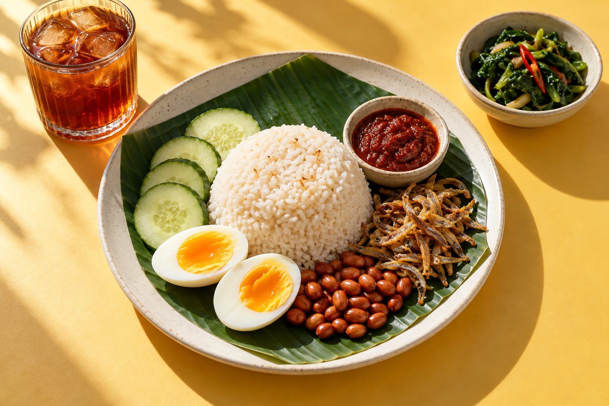

Big cravings.
Small budget.
The daily “makan apa?” dilemma, sorted. One meal that fits your money, your food rules and your day—with reasons, not guesswork.

Picked for you.Budget ✓ Food rules ✓
THREE STEPS. THEN MAKAN.
From “no idea” to “let’s eat”.
Tell it what you can't eat
Allergies (ten common ones, including the hidden ones like belacan, oyster sauce and soy sauce), halal, vegetarian, no beef. Then your kitchen (kettle only? stove?) and your weekly budget. One minute.
Tap “Pick my lunch”
You get one meal: what it costs, how long it takes, and why it fits. Not feeling it? Tap “Not this”: too pricey, not in the mood, missing ingredients, or never again.
Tap “I'll eat this”
It counts towards today's money and fruit and veg, so dinner fits the rest of your day and tomorrow's picks don't repeat it.
- Money left this week
- Allergies & food rules
- Kettle or stove
- Time you have
- What's at home
- Fruit & veg so far today
- What you ate yesterday
- Lunch on campus
- Friends' rules too
CURIOUS? GOOD.
A side of food knowledge.
Every fact comes with its evidence level. Because your group chat isn’t always right.
Durian and crab together are dangerous?
Myth No study has found harm. When volunteers in China ate the five most-cited “clashing” pairs, nothing happened.
Teh tarik right after a dhal or chicken meal?
Some evidence Black tea cut iron absorption from a meal by 79–94% in a human study. Have it an hour later.
Kale is the healthiest green?
Strong evidence Per 100 g, kale beats watercress. But kailan is the same plant species, local, and about a fifth of the price.
Why one pick
- 99
results in a meta-analysis on choice overload: too many options hurt most when people are unsure what they want and want to save effort. That's “makan apa?” at 7 p.m. Chernev et al. 2015
- 54%
of university students in one Malaysian study didn't always have enough food. Money and time were among the reasons. Mal J Nutr 2019
- 95.1%
of Malaysian adults eat fewer than five servings of fruit and vegetables a day. NHMS 2023
- RM 3.68
was the average plate of nasi lemak in 2024, up from RM 2.03 in 2011. DOSM via Malay Mail
Prices are Klang Valley estimates for 2026 unless a source is shown, and you can type in what your stalls charge. Stall food has no allergen label, so the app says what a dish usually contains and asks you to check with the seller. It's a helper, not medical advice.
THE HUNGRY PART IS EASY.